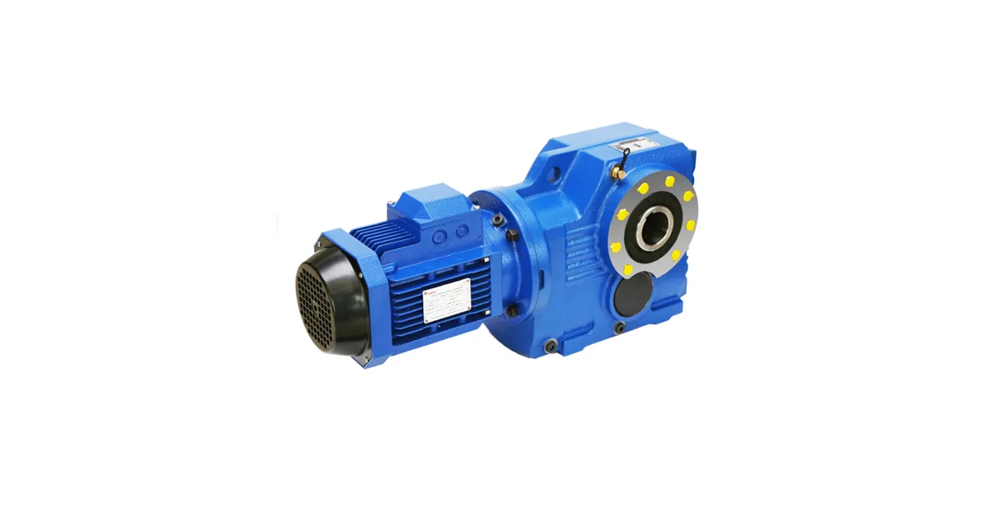

Собственное производствоПромышленные редукторы для производителей оборудования•Отгрузка по всей России•Аналоги SEW, NORD, Bonfiglioli без переделки рамы•Расчёт и КП за 15 минут•Гарантия 36 месяцевПромышленные редукторы для производителей оборудования•Отгрузка по всей России•Аналоги SEW, NORD, Bonfiglioli без переделки рамы•Расчёт и КП за 15 минут•Гарантия 36 месяцев
Главная›Блог›Монтажные положения Flender: почему это не мелочь
Эксплуатация
Монтажные положения Flender: почему это не мелочь
Опыт инженеров Завода Редукторов · чтение ~9 минут
Монтажное положение редуктора Flender — это не формальность заказа, а параметр, определяющий объём масла и работоспособность верхних ступеней. Если корпус стоит не так, как предусмотрено каталогом, часть зубчатых колёс остаётся без смазки. Ниже — разбор обозначений, объёмов заливки и действий при смене положения.
Сразу о главном. Готовой таблицы соответствия «модель Flender → типоразмер ZR» мы не публикуем. Взаимозаменяемость определяется присоединительными и габаритными размерами, а не только крутящим моментом: два редуктора с одинаковым моментом могут не совпасть по плите. Подбор по марке Flender ведёт инженер — по шильду, фото узла или габаритному чертежу. Наш аналог ZR проектируется под задачу, цена — по запросу.
Что означает монтажное положение для корпуса
Монтажное положение задаёт ориентацию корпуса относительно вертикали. Оно указывается при заказе и фиксируется на шильде. От него зависят объём заливаемого масла, уровень, на котором это масло стоит, и назначение отверстий: какое работает заливным, какое сливным, какое — под сапун.
В каталогах положения обычно обозначаются от M1 до M6. Встречается и запись B3, B5, V1, V3 — она пришла от монтажных исполнений электродвигателей. M1 — горизонтальное на лапах, M4 — вертикальное с валом вниз, остальные — промежуточные и боковые. Конкретное соответствие буквы и картинки всегда берётся из каталога производителя вашей серии: у разных марок нумерация отличается.
Практическая трактовка типовых положений
M1 (B3) — горизонтально, на лапах: базовый объём масла, сапун сверху. M2 — горизонтально, повёрнут на бок: смещается уровень, меняются пробки. M3 — горизонтально, фланцем вверх: растёт объём заливки. M4 (V1) — вертикально, вал вниз: максимальный объём, нужен дополнительный подвод масла. M5 (V3) — вертикально, вал вверх: риск подтёка через верхнюю манжету. M6 — боковое исполнение: индивидуальный уровень по каталогу.
Признак → причина → что делать при отклонениях монтажного положения
Признак
Причина
Что делать
Шум и нагрев верхней ступени
Недостаток смазки из-за неверного объёма
Слить масло, залить объём по каталогу для данного положения, проверить по контрольной пробке
Масло выдавливает через манжеты
Перелив, вспенивание, рост давления в корпусе
Слить излишек до уровня контрольной пробки, проверить работу сапуна
Сапун ниже уровня масла
Корпус повёрнут, сапун не переставлен
Переставить сапун в самую высокую точку нового положения
Заливное отверстие не сверху
Не переставлены пробки после смены положения
Переставить заливную и сливную пробки согласно новому положению
Уровень не виден в контрольной пробке
Объём не соответствует положению
Долить или слить масло до нижней кромки контрольного отверстия
Почему объём масла нельзя определять на глаз
При смене положения меняется не только уровень, но и сам объём. Вертикальное исполнение почти всегда требует больше масла, чем горизонтальное того же типоразмера: смазка должна доставать до верхней ступени и верхнего подшипника, куда разбрызгивание не добивает.
Перелив так же вреден, как недолив. Избыток масла вспенивается, растут температура и давление в корпусе, масло выдавливает через манжеты. Поэтому ориентируются не на «полный картер», а на контрольную пробку уровня для конкретного положения.
Если положение изменили на объекте, порядок такой: слить масло, переставить пробки и сапун под новое положение, залить объём по каталогу для этого положения, проверить по контрольной пробке.

Редуктор Flender: коническо-цилиндрический исполнение
Назначение пробок и сапуна
В корпусе обычно четыре функциональных отверстия. Заливная — сверху; сливная — в самой нижней точке нового положения; контрольная задаёт уровень; сапун выравнивает давление и должен быть в самой высокой точке.
Самая частая ошибка при перестановке — оставить сапун на прежнем месте. Если после поворота корпуса сапун оказался ниже уровня масла, редуктор начнёт «плеваться» маслом при каждом нагреве.
Обслуживание: проверка уровня и пробок
Связь положения с серией Flender
У линейки Flender (H1, H2, H3, H4, B2, B3, B4, T) набор доступных положений отличается от серии к серии. Соосные исполнения обычно допускают весь ряд, червячные — ограниченный, потому что у них смазка ведомого колеса завязана на его погружение в масляную ванну.
По остальным сериям каталог даёт только диапазон, поэтому ряд мы не достраиваем. Придумать несуществующий типоразмер хуже, чем его не назвать.
Какие данные собрать перед заказом
Что нужно инженеру для подбора и где это взять
Параметр
Где взять
Зачем нужен
Полное обозначение с шильда
табличка на корпусе редуктора
определяет серию Flender и типоразмер
Мощность и обороты двигателя
шильд двигателя или паспорт привода
задаёт входную ступень и запас
Обороты на выходе
технолог или расчёт по механизму
через них считается передаточное число
Монтажное положение
по факту установки на объекте
определяет уровень масла и расположение пробок
Присоединительные размеры
замер или габаритный чертёж
главное условие взаимозаменяемости
Характер нагрузки и режим
технолог, паспорт механизма
через него выбирается сервис-фактор
Доставка, оплата и гарантия
Отгружаем по всей России транспортными компаниями, самовывоз — со склада в Челябинске. Оплата по счёту для юридических лиц, для новых клиентов возможна частичная предоплата. На изделия собственного производства ZR даём гарантию 36 месяцев и передаём паспорт с фактическими параметрами. Условия и сроки — на страницах доставки и цен: конкретную стоимость называем после подбора, потому что она зависит от исполнения, передаточного числа и комплектации двигателем.
Не уверены в подборе? Пришлите фото шильдика на zr@zavod-red.ru — инженер прочитает обозначение, сверит присоединительные размеры и пришлёт расчёт. Или соберите вариант сами в калькуляторе подбора: там задаются диапазоны по мощности, оборотам, моменту и передаточному числу.
Частые вопросы
Можно ли поставить редуктор Flender вертикально, если заказан горизонтальный?
Только после пересчёта заливки и перестановки пробок с сапуном. Иначе верхняя ступень окажется без смазки. Правильнее заказывать под фактическое положение.
Сколько масла заливать в редуктор Flender?
Объём берётся из каталога для конкретного типоразмера и конкретного положения, а контролируется по контрольной пробке. Универсальной цифры нет.
Что будет, если сапун останется внизу?
При нагреве редуктор начнёт «плеваться» маслом. Сапун должен находиться в самой высокой точке нового положения.
Как переставить пробки при смене положения?
Слить масло, затем переставить заливную, сливную и контрольную пробки в соответствии с новым положением. Сапун также переносится в верхнюю точку.
Влияет ли серия Flender на доступные монтажные положения?
Да. Соосные исполнения обычно допускают весь ряд положений, червячные — ограниченный, потому что смазка ведомого колеса завязана на погружение в масляную ванну.
Можно ли подобрать аналог ZR по моменту?
Нет, только по моменту подбирать нельзя. Взаимозаменяемость решают присоединительные и габаритные размеры. Подбор ведёт инженер по шильду, фото узла или габаритному чертежу.